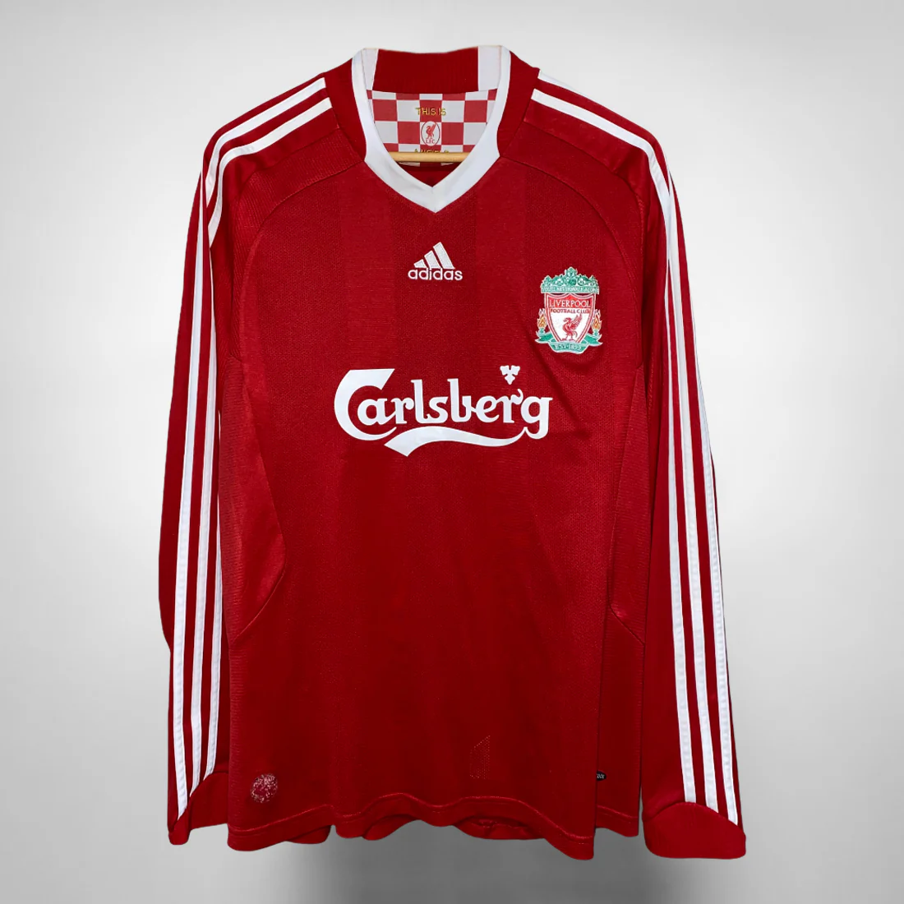
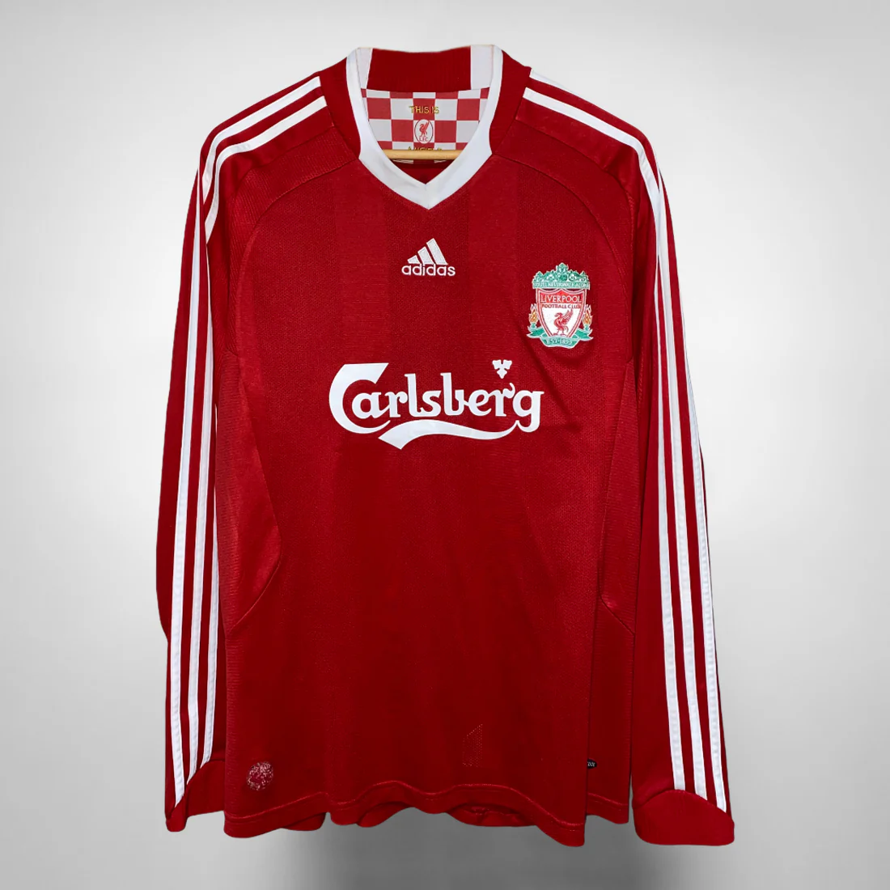

ในช่วงเวลาส่วนใหญ่ของประวัติศาสตร์ลิเวอร์พูล สีชุดทีมเหย้าของสโมสรเป็นสีแดงล้วน แต่ในช่วงที่สโมสรเพิ่งก่อตั้ง ชุดทีมเหย้าจะคล้ายกับเอฟเวอร์ตันในสมัยนั้น โดยเป็นเสื้อแบ่งสี่ส่วนสีฟ้าขาว ชุดดังกล่าวใช้ในการแข่งขันจนถึง ค.ศ. 1894 เมื่อสโมสรนำสีแดงซึ่งเป็นสีประจำเมืองมาใช้ ตั้งแต่ ค.ศ. 1901 สโมสรใช้นกไลเวอร์ซึ่งเป็นสัญลักษณ์ของเมืองลิเวอร์พูลเป็นตราสโมสร แต่ยังไม่ถูกนำมาอยู่ในชุดแข่งจนกระทั่งใน ค.ศ. 1955 ลิเวอร์พูลใส่ชุดแข่งขันเป็นเสื้อสีแดงและกางกางขาสั้นสีขาวจนถึง ค.ศ. 1964 เมื่อผู้จัดการทีม บิลล์ แชงคลี ตัดสินใจเปลี่ยนให้เป็นสีแดงล้วน ลิเวอร์พูลลงเล่นในชุดสีแดงล้วนครั้งแรกในนัดที่พบกับอันเดอร์เลคต์ เอียน เซนต์ จอห์น ระลึกถึงในอัตชีวประวัติของเขาว่า: เขา [แชงคลี] คิดว่าโทนสีจะส่งผลกระทบทางจิตวิทยา - สีแดงคือความอันตราย สีแดงคือพลัง วันหนึ่งเขาเข้ามาในห้องแต่งตัวและโยนกางเกงขาสั้นสีแดงคู่หนึ่งให้กับรอนนี ยีตส์ "ใส่กางเกงขาสั้นนั่นซะและมาดูว่าคุณเป็นยังไง" เขาพูด " ให้ตายเถอะ รอนนี คุณดูดีมาก ดูน่ากลัว คุณดูเหมือนสูง 7 ฟุต" "ทำไมไม่ทำให้มันสมบูรณ์แบบไปเลยล่ะ หัวหน้า?" ผมเสนอ " ทำไมไม่สวมถุงเท้าสีแดงล่ะ? ใส่สีแดงล้วนให้หมดไปเลย" แชงคลีอนุมัติและชุดที่เป็นที่จดจำก็ถือกำเนิดขึ้น
สีชุดทีมเยือนของลิเวอร์พูลมักจะเป็นเสื้อสีเหลืองหรือสีขาวและกางเกงขาสั้นสีดำ ยกเว้นในบางครั้ง เช่น ใน ค.ศ. 1987 สโมสรใช้ชุดสีเทาล้วน และในฤดูกาล 1991 - 92 ซึ่งฉลองครบรอบหนึ่งร้อยปี สโมสรใช้เสื้อสีเขียวและกางเกงขาสั้นสีขาว ชุดทีมเยือนมีหลากหลายสีในทศวรรษ 1990 ประกอบด้วย สีทองกับสีกรมท่า, สีเหลืองสดใส, สีดำและสีเทาและสีน้ำตาลอ่อน สโมสรสลับสีชุดทีมเยือนระหว่างสีเหลืองกับสีขาว จนกระทั่งในฤดูกาล 2008 - 09 ได้กลับมาใช้ชุดสีเทาอีกครั้ง สีชุดที่สามถูกออกแบบสำหรับนัดเยือนในการแข่งขันรายการยุโรป แต่ก็สามารถใส่ชุดที่สามในนัดเยือนของการแข่งขันในประเทศได้ หากสีชุดทีมเยือนนั้นซ้ำกับสีชุดทีมเหย้า วอร์ริเออร์สปอร์ตส์เป็นผู้ออกแบบชุดแข่งขันระหว่าง ค.ศ. 2012 - 2015 โดยเริ่มครั้งแรกในฤดูกาล 2012 - 13 ในเดือนกุมภาพันธ์ ค.ศ. 2015 บริษัทแม่ของวอร์ริเออร์ นิวบาลานซ์ ประกาศเข้าสู่ตลาดฟุตบอลโลก ชุดแข่งของสโมสรจึงถูกเปลี่ยนผู้ผลิตชุดจากวอร์ริเออร์เป็นนิวบาลานซ์ เสื้อผ้ายี่ห้ออื่นที่เคยผลิตให้กับสโมสรได้แก่ อัมโบรซึ่งเคยผลิตชุดแข่งให้จนถึง ค.ศ. 1985 จากนั้นอาดิดาสได้เข้าแทนที่ จนกระทั่ง ค.ศ. 1996 รีบอคได้เข้ามาแทนที่อาดิดาส และผลิตชุดแข่งให้สโมสรเป็นเวลา 10 ปี ก่อนที่อาดิดาสจะกลับมาผลิตชุดแข่งให้อีกครั้งตั้งแต่ ค.ศ. 2006 ถึง 2012 ไนกี้กลายเป็นผู้ผลิตชุดแข่งอย่างเป็นทางการตั้งแต่ฤดูกาล 2020 - 21
ลิเวอร์พูลเป็นสโมสรฟุตบอลอาชีพแรกในอังกฤษที่มีตราของผู้สนับสนุนอยู่บนชุดแข่งขัน หลังทำสัญญากับฮิตาชิใน ค.ศ. 1979 อย่างไรก็ตาม ในช่วงสองสามปีแรกของข้อตกลง กฎการออกอากาศหมายความว่าไม่สามารถแสดงโลโก้ของผู้สนับสนุนบนเสื้อสำหรับการแข่งขันทางโทรทัศน์ ตั้งแต่นั้นเป็นต้นมา สโมสรได้รับการสนับสนุนจากคราวน์เพนต์ส, แคนดี, คาร์ลส์เบิร์กและสแตนดาร์ดชาร์เตอร์ด สัญญาที่เซ็นกับคาร์ลส์เบิร์กใน ค.ศ. 1992 นั้นเป็นสัญญาที่ยาวนานที่สุดในลีกสูงสุดของฟุตบอลอังกฤษ สัญญานี้สิ้นสุดลงในช่วงต้นฤดูกาล 2010–11 เมื่อธนาคารสแตนดาร์ดชาร์เตอร์ดกลายเป็นผู้สนับสนุนของสโมสร ตราสโมสรของลิเวอร์พูลมีนกไลเวอร์ สัญลักษณ์ของเมือง ซึ่งในอดีตถูกนำมาใส่ในโล่ ในปี ค.ศ. 1977 นกไลเวอร์สีแดงยืนอยู่บนฟุตบอล (มีลักษณะ "ยืนเด่นอยู่บนฟุตบอล ปีกของนกไลเวอร์ยกขึ้นและเสริมการถือสาหร่ายสีแดงชิ้นหนึ่งไว้ในจงอยปาก") ได้รับมอบเป็นมุทรตราประจำสโมสรโดย คอลลิจออฟอาร์มส์ ให้กับ อิงกลิชฟุตบอลลีก ไว้สำหรับใช้งานโดยลิเวอร์พูล อย่างไรก็ตาม ลิเวอร์พูลไม่เคยใช้ตรานี้ ต่อมาใน ค.ศ. 1992 ซึ่งเป็นปีที่มีการรำลึกถึงร้อยปีของสโมสร มีการออกแบบตราสโมสรใหม่โดยนำสัญลักษณ์ที่อยู่บนประตูแชงคลีมาใส่ไว้ด้วย ปีต่อมามีการใส่คบเพลิงคู่ไว้ทั้งสองด้านของตราสโมสร เพื่อเป็นสัญลักษณ์ของอนุสรณ์สถานฮิลส์โบโรที่ตั้งอยู่ด้านนอกแอนฟีลด์ และระลึกถึงผู้เสียชีวิตในภัยพิบัติฮิลส์โบโร ใน ค.ศ. 2012 ชุดแข่งแรกของวอร์ริเออร์สปอร์ตส์นำโล่และประตูออกไป เหลือแค่นกไลเวอร์เหมือนกับชุดแข่งในทศวรรษ 1970 คบเพลิงถูกย้ายไปอยู่ด้านหลังเสื้อ ล้อมตัวเลข 96 ซึ่งเป็นจำนวนผู้เสียชีวิตในภัยพิบัติฮิลส์โบโร